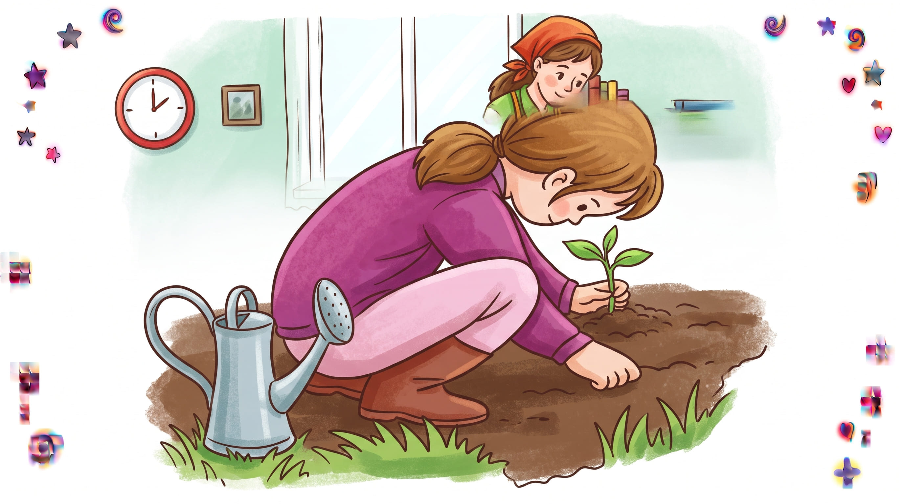
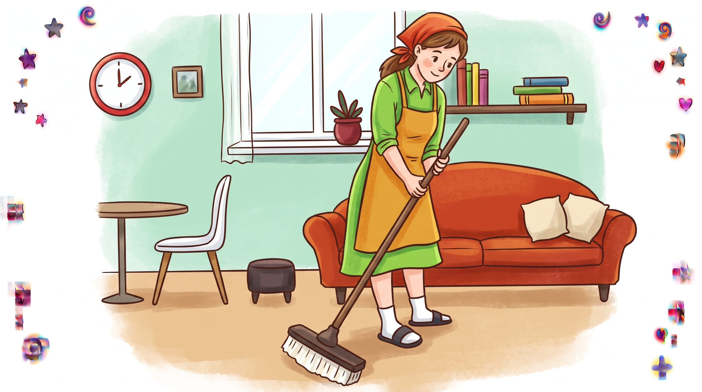
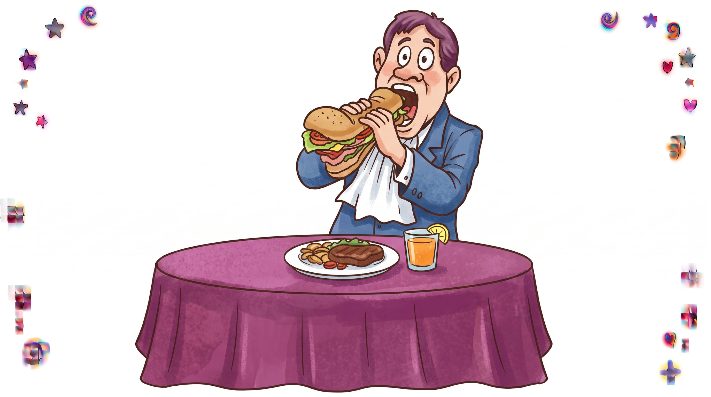
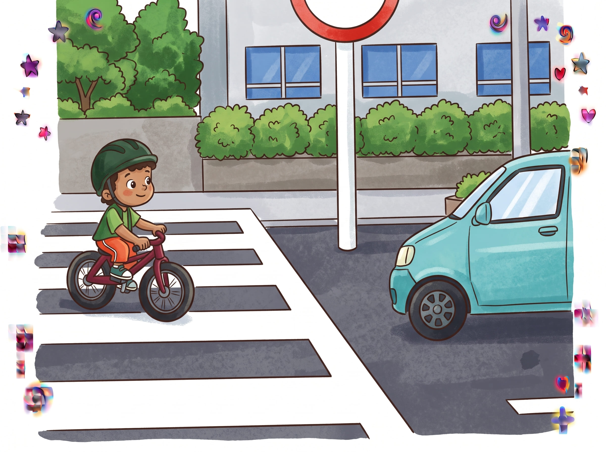
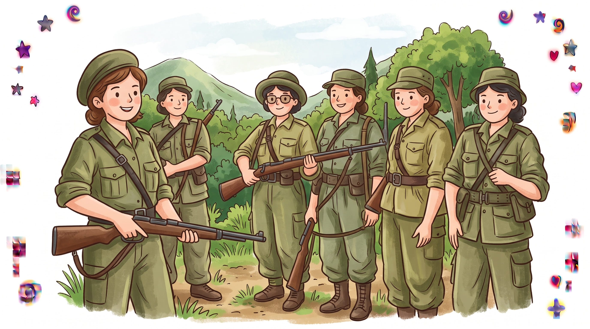
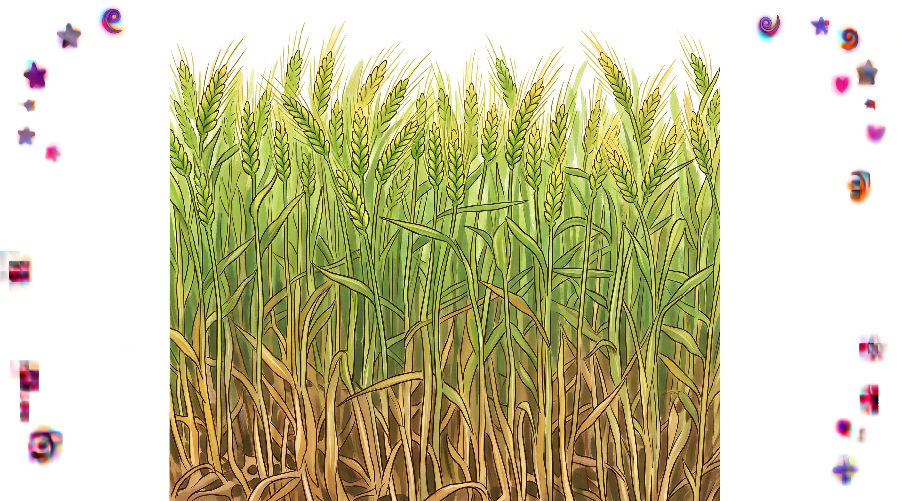
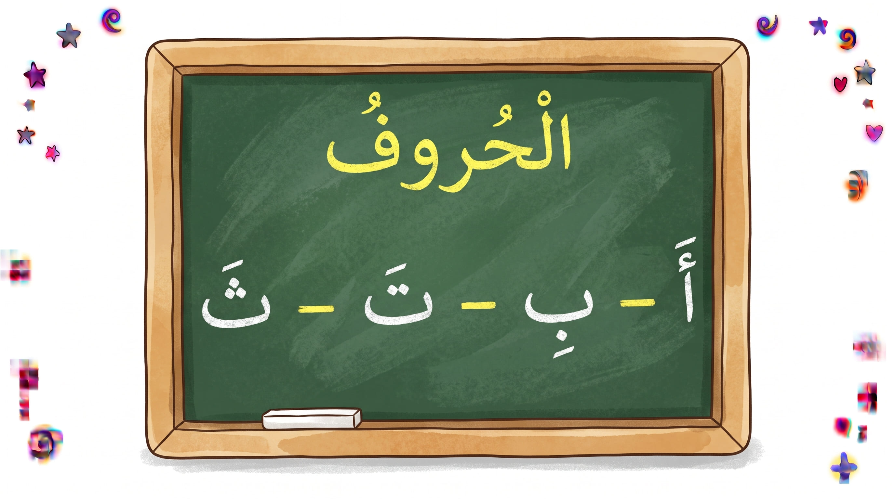
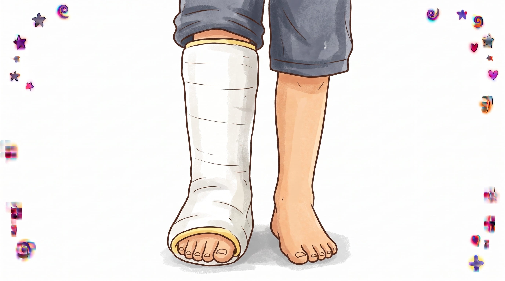
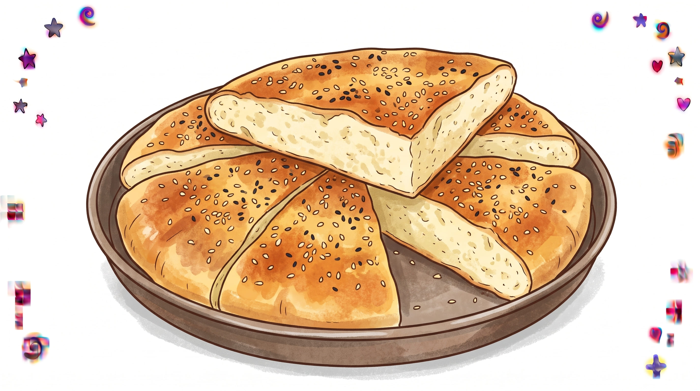

🔒
اشْتِرَاكٌ إِجْبَارِيٌّ
لِفَتْحِ الدَّرْسِ وَمُتَابَعَةِ الأَنْشِطَةِ التَّفَاعُلِيَّةِ، يُرْجَى الاِنْضِمَامُ إِلَى قَنَاتِنَا أَوَّلًا ثُمَّ الضَّغْطُ عَلَى تَأْكِيدِ الاِشْتِرَاكِ.
📢 الاِنْضِمَامُ إِلَى الْقَنَاةِ
اللغة العربية • السنة الثالثة ابتدائي • عُمَرُ يَاسِف
كِتَابُ التِّلْمِيذِ - صَفْحَةُ 47
فَهْمُ الْمَنْطُوقِ • عُمَرُ الصَّغِيرُ
🎧 اسْتَمِعْ إِلَى نَصِّ فَهْمِ الْمَنْطُوقِ (عُمَرُ الصَّغِيرُ) :
أَفْهَمُ النَّصَّ الْمَنْطُوقَ (اخْتَرِ الْإِجَابَةَ الصَّحِيحَةَ) :
أَسْتَعْمِلُ الصِّيَغَ
الصيغ المدرجة: (فِي يَوْمٍ، فِي يَوْمٍ مِنَ الْأَيَّامِ، فِي أَحَدِ الْأَيَّامِ)
فِي أَحَدِ أَيَّامِ الْعُطْلَةِ الشِّتَوِيَّةِ ذَهَبَ عَبْدُ الرَّحْمَنِ مَعَ وَالِدِهِ إِلَى السِّينِمَا حَيْثُ شَاهَدَا «فِلْمَ مَعْرَكَةِ الْجَزَائِرِ».
عَبِّرْ عَنِ الصُّوَرِ بِاخْتِيَارِ الصِّيغَةِ الْمُنَاسِبَةِ لِكُلِّ صُورَةٍ :
أُنْتِجُ شَفَهِيّاً
صحيحة: 0
خاطئة: 0
كِتَابُ التِّلْمِيذِ - صَفْحَةُ 48 وَ 49
عُمَرُ يَاسِف • أَقْرَأُ وَأَفْهَمُ
📖 نَصُّ الْقِرَاءَةِ :
يُؤْمِنُ عُمَرُ يَاسَف بِاسْتِقْلَالِ بَلَدِهِ، وَيَعْرِفُ أَنَّ ذَاكَ الْيَوْمَ قَرِيبٌ. لِلِاحْتِفَالِ بِهِ عَمِلَ كَثِيرًا حَتَّى تَمَكَّنَ مِنْ شِرَاءِ بِذْلَةٍ بُنِّيةٍ رَائِعَةٍ. هَا هُوَ يَقِيسُهَا، تَلْمَحُهُ أُمُّهُ ذَهْبِيَّةٌ فَتَقُولُ لَهُ: كَمْ أَنْتَ وَسِيمٌ! كَأَنَّ الْبِذْلَةَ مَصْنُوعَةٌ لِأَجْلِكَ!
سَأَرْتَدِيهَا لِلِاحْتِفَالِ بِالِاسْتِقْلَالِ، لِلِاحْتِفَاءِ بِالْحُرِّيَّةِ يَا أُمِّي. فِي ذَلِكَ الْيَوْمِ سَأَحْمِلُ رَايَتِي وَأَجُوبُ بِهَا شَوَارِعَ الْجَزَائِرِ الْحَبِيبَةِ بِالْكَامِلِ، وَأَرَدِّدُ أَنَاشِيدَ الْحُرِّيَّةِ. الْحُرِّيَّةُ تَسْتَحِقُّ أَنْ نَحْتَفِلَ بِهَا!
كَانَتْ ذَهْبِيَّةُ تُدْرِكُ أَنَّ عُمَرَ لَمْ يَعُدْ «مِلْكَهَا» هِيَ فَقَطْ، فَهُوَ مُسَخَّرٌ لِلْجَزَائِرِ كُلِّهَا، امْتَلَأَتْ فَخْرًا، فَهِيَ تَعْلَمُ أَنَّ رِفَاقَ الْبَطَلِ «الْخَاوَّةَ» صَارُوا بِمَثَابَةِ عَائِلَةِ عُمَرَ، ضَمَّتِ ابْنَهَا الْبَطَلَ، قَبَّلَتْهُ وَتَرَكَتْهُ يَتْبَعُ قَدَرَهُ.
لَمْ تَكُنِ الْمَهَمَّاتُ الَّتِي أُسْنِدَتْ لِعُمَرَ سَهْلَةً عَلَى الْإِطْلَاقِ حَيْثُ كَانَ عَلَيْهِ أَنْ يَتَنَازَلَ لِأَجْلِهَا عَنِ الذَّهَابِ لِلْمَدْرَسَةِ وَأَنْ يَتَحَلَّى بِالْإِرَادَةِ وَالشَّجَاعَةِ وَالذَّكَاءِ وَالْيَقَظَةِ، فَلَقَدْ كَانَ عَيْنَ وَأُذُنَ زُعَمَاءِ «مَعْرَكَةِ الْجَزَائِرِ» فِي الْقَصَبَةِ، وَمَحَلَّ ثِقَتِهِمْ يَنْقُلُ الرَّسَائِلَ السِّرِّيَّةَ فِي الْمِحْفَظَةِ الَّتِي اجْتَازَ بِهَا الْحَوَاجِزَ الْأَمْنِيَّةَ وَالْعَرَقُ يَتَصَبَّبُ مِنْ جَبِينِهِ الطَّاهِرِ وَلَمْ يُفَكِّرْ فِي التَّرَاجُعِ...
فَفِي الثَّامِنِ مِنْ أُكْتُوبَرَ مِنْ عَامِ أَلْفٍ وَتِسْعِمِائَةٍ وَسَبْعٍ وَخَمْسِينَ، فِي الْمَنْزِلِ رَقْمِ خَمْسَةٍ بِشَارِعِ «أَبْدِيرَام» فِي حَيِّ الْقَصَبَةِ، اُسْتُشْهِدَ عُمَرُ يَاسَف أَصْغَرُ فِدَائِيٍّ فِي ثَوْرَةِ التَّحْرِيرِ، وَهُوَ فِي سِنِّ الثَّالِثَةَ عَشْرَةَ... رَحِمَ اللَّهُ الشُّهَدَاءَ.
كَلِمَاتِي الْجَدِيدَةُ (خيارات محددة لعوض الكلمات الملونة) :
أَقْرَأُ وَأَفْهَمُ (اخْتَرِ الْإِجَابَةَ الصَّحِيحَةَ) :
صحيحة: 0
خاطئة: 0
كِتَابُ التِّلْمِيذِ - صَفْحَةُ 50
أَتَعَرَّفُ عَلَى الْفِعْلِ الْمُضَارِعِ • اسْمُ الْمَفْعُولِ • أَثْرِي لُغَتِي
أُلَاحِظُ وَأُمَيِّزُ:
سَأَرْتَدِيهَا لِلِاحْتِفَالِ بِالِاسْتِقْلَالِ، لِلِاحْتِفَاءِ بِالْحُرِّيَّةِ يَا أُمِّي. فِي ذَلِكَ الْيَوْمِ سَأَحْمِلُ رَايَتِي وَأَجُوبُ بِهَا شَوَارِعَ الْجَزَائِرِ الْحَبِيبَةِ، وَأَرَدِّدُ أَنَاشِيدَ الْحُرِّيَّةِ. الْحُرِّيَّةُ تَسْتَحِقُّ أَنْ نَحْتَفِلَ بِهَا!
الحرية تستحق أن نحتفل بها.
1. فِي أَيِّ زَمَنٍ صُرِفَتِ الْأَفْعَالُ الْمُلَوَّنَةُ ؟
أُلَاحِظُ وَأُمَيِّزُ (القسم الثاني):
يَقِيسُ عُمَرُ بِذْلَةً بُنِّيَّةً رَائِعَةً. هَا هُوَ يَقِيسُهَا، تَلْمَحُهُ أُمُّهُ ذَهْبِيَّةً فَتَقُولُ لَهُ: كَمْ أَنْتَ وَسِيمٌ! كَأَنَّ الْبِذْلَةَ (مَصْنُوعَةٌ) لِأَجْلِكَ!
نَوْعُ الْكَلِمَةِ الْمُلَوَّنَةِ :
اسْمُ الْمَفْعُولِ مِثْلَ: فَتَحَ - فُتِحَ ⟵ مَفْتُوحٌ / رَفَعَ - رُفِعَ ⟵ مَرْفُوعٌ
2. أَثْرِي لُغَتِي (اضْغَطْ عَلَى مُرَادِفَاتِ كَلِمَةِ «الشَّجَاعَةِ» فَقَطْ) :
صحيحة: 0
خاطئة: 0
كُرَّاسُ الْأَنْشِطَةِ - صَفْحَةُ 32 وَ 33
تَرْتِيبُ الْحِوَارِ • أَفْهَمُ النَّصَّ • أُوَظِّفُ الْفِعْلَ وَاسْمَ الْمَفْعُولِ
1. رَتِّبِ الْجُمَلَ لِتَحْصُلَ عَلَى جُزْءٍ مِنَ الْحِوَارِ (ص 32 - الترتيب الدقيق المطلوب) :
1.
2.
3.
4.
5.
6.
7.
2. أَفْهَمُ النَّصَّ (ص 33) - ضَعْ عَلَامَةً أَمَامَ الْإِجَابَةِ الصَّحِيحَةِ (صح / خطأ) :
3. أُوَظِّفُ الْفِعْلَ الْمُضَارِعِ (ص 33) :

بنت تسقي نبتة
البِنْتُ شُجَيْرَةً

أم تكنس الأرض
الْأُمُّ الْأَرْضَ

رجل يأكل
الرَّجُلُ طَعَامَهُ

دراج يقطع الطريق
الدَّرَّاجُ الطَّرِيقَ

مجاهدات
الْمُجَاهِدَاتُ السِّلَاحَ
4. أُوَظِّفُ اسْمَ الْمَفْعُولِ (ص 33) :

حقل قمح
الْحَقْلُ

سبورة الدرس
الدَّرْسُ

رجل مصابة
رِجْلُ

خبز طازج
الْخُبْزُ
صحيحة: 0
خاطئة: 0
كُرَّاسُ الْأَنْشِطَةِ - صَفْحَةُ 34
أُقَيِّمُ تَعَلُّمَاتِي
1. أُكْمِلُ خَرِيطَةَ الْكَلِمَةِ "الشُّجَاعُ" (أسئلة منفصلة بخيارات متعددة) :
2. عَبِّرْ عَنِ الصُّوَرِ مُسْتَعْمِلًا الصِّيَغَ (فِي يَوْمٍ – فِي أَحَدِ أَيَّامٍ – فِي يَوْمٍ مِنَ الْأَيَّامِ) :
3. أَكْمِلْ حَسَبَ الْمِثَالِ : كَتَبَ الطِّفْلُ الرِّسَالَةَ ⟵ يَكْتُبُ الطِّفْلُ الرِّسَالَةَ :
4. أَكْمِلْ عَلَى الْمِنْوَالِ :
5. اخْتَرِ الصِّفَاتِ الْإِيجَابِيَّةَ لِعُمَرَ :
صحيحة: 0
خاطئة: 0
كُرَّاسُ الْأَنْشِطَةِ - صَفْحَةُ 35
أَتَدَرَّبُ عَلَى التَّعْبِيرِ الْكِتَابِيِّ • حِكَايَةُ عُمَرَ
1. رَتِّبِ الْجُمَلَ لِتَحْصُلَ عَلَى حِكَايَةِ عُمَرَ (ص 35) :
1.
2.
3.
4.
5.
6.
2. حَدِّدْ أَجْزَاءَ الْقِصَّةِ عَلَى الْجَدْوَلِ الْمُوَالِي :
| الْبِدَايَةُ |
الْوَسَطُ |
النِّهَايَةُ |
|
|
|
صحيحة: 0
خاطئة: 0
📊 التَّقْرِيرُ النِّهَائِيُّ لِلْمُنْهَاجِ
حصيلة إجابات التمارين التفاعلية لكامل الدرس :
إجابات صحيحة
0
إجابات خاطئة
0
← العودة إلى الفهرس